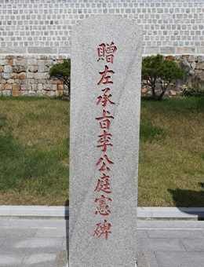
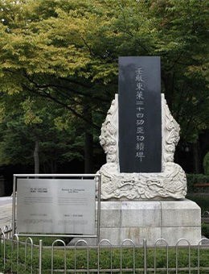
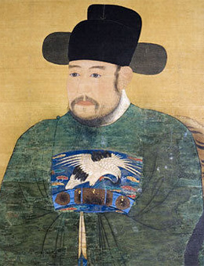
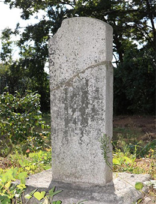

송상현 (1551 ~ 1592)
임진왜란 때 동래읍성 전투에서 순절한 문신. 임진왜란 8개월 전인 1591년 8월 동래부사로 임명됨. 임진왜란 당시 동래읍성에서 왜군의 공격에 끝까지 항전하다가 순절함.
노개방 (1563 ~ 1592)
임진왜란 때 동래읍성 전투에서 순절한 문신. 1588년 과거 급제 후 동래부 교수(敎授) 근무함. 임진왜란 당시 동래읍성 정원루에서 왜군과 항거하다가 동래부사 송상현 등과 함께 순절함.
조영규 (1535 ~ 1592)
임진왜란 때 동래읍성 전투에서 순절한 무신. 1592년 양산군수로 있을 때 왜군이 부산을 진격한다는 소식을 듣고 곧장 달려가 동래부사 송상현과 동래읍성에서 항전하다가 순절함.
정발 (1553 ~ 1592)
임진왜란 때 부산진성 전투에서 순절한 무신. 1577년 무과에 급제하였고, 1592년 부산진성의 사령관격인 부산진첨절제사로 임명됨. 왜군이 부산진성을 공격하자 군‧관‧민을 독려하여 끝까지 싸우다 순절함.
이정헌 (? ~ 1592)

임진왜란 때 부산진성 전투에서 순절한 무신. 1591년 무과에 급한 후 정발을 도와 적의 침입을 방어하는 장수(조방장)가 됨. 왜군이 부산진성을 공격하자 정발과 함께 항전하다가 순절함.
윤흥신 (? ~ 1592)
임진왜란 때 다대진성 전투에서 순절한 문신. 1592년 다대진 첨절제사에 임명됨. 왜군이 부산진성 함락 후 다대진성을 공격하자, 동생 윤흥제와 함께 싸우다 순절함.
임란 동래 24공신 (? ~ 임란이후)

임진왜란 때 전국에서 왜군과 싸우다가 전사한 동래부민 24명. 임진왜란 때 동래읍성이 함락된 후 동래부민들은 고향을 떠나 전국 각지에서 봉기하고 있던 의병에 참가하여 항전함.
수영25의용 (? ~ 임란이후)
임진왜란 때 좌수영성에서 왜군에 저항한 25인. 임진왜란 때 좌수영의 수군과 성민 25인은 죽기를 각오하고 유격전으로 왜군에 대항하다가 순절함.
사명대사 (1544 ~ 1610)
조선 중기 승려로 법명은 유정(惟政)임. 임진왜란 당시 부산에서 활동하였는데, 부산진성을 수축하는데 일조함. 1604년 일본과의 외교 담판으로 3,000여명의 포로와 함께 귀국함.
박인로 (1561 ~ 1642)

조선 후기 경상좌수영 통주사를 지낸 무신. 임진왜란 때 의병 활동 전개함. 정유재란이 끝난 뒤에도 우리나라 바다에서 철수하지 않은 왜군을 격퇴함.
안용복 (? ~ ?)
조선 후기에 울릉도와 독도를 수호한 어부. 1693년과 1696년 두 차례에 걸쳐 일본으로 건너가 울릉도와 독도가 조선 땅임을 자인하도록 활약함.
이안눌 (1571 ~ 1637)
조선 후기 동래부사를 지낸 문신. 1608년에 동래부사로 임명됨. 동래부사 재임 시 임진왜란으로 폐허가 된 부산지역을 복구하고 민심을 다독이는 데 힘씀.
조엄 (1719 ~ 1777)
조선 후기 동래부사를 지낸 문신. 1757년에 동래부사로 부임하여 대일 외교와 무역 과정에서 발생한 폐단을 바로잡음. 1763년 통신사로 일본에 다녀오면서 고구마를 가져와 재배토록 함.
강필리 (1713 ~ 1767)
조선 후기 동래부사를 지낸 문신. 1764년 동래부사로 부임하여 처음으로 고구마 재배에 성공하고 고구마 재배를 권장하기 위해 『감저보』를 저술함. 동래온천을 대대적으로 개축‧증축함.
정현덕 (1810 ~ 1883)

조선 후기 동래부사를 지낸 문신. 1867년에 동래부사로 부임하여 동래읍성을 개축하고 관아의 대문인 독진대아문을 중수함. 군사 훈련 등 유사시를 위한 대비도 철저히 함.
.png)